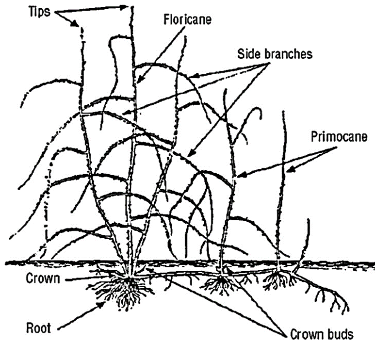

Common Name: Blackberry, Raspberry
Overview
The broad term "brambles" applies to any species of the Rubus genus. A newer term "caneberries" - is emerging as a more descriptive replacement for the term "brambles." Collectively, "brambles" include the reds, yellows, black ("blackcaps") and purple raspberries, in addition to both the thorned and thornless blackberries.
Brambles are good candidates for backyard gardeners. They are relatively easy to grow, fit in smaller backyards and produce a steady supply of tasty, antioxidant-rich berries that surpass pricey, perishable ones from the grocery.
Brambles have perennial roots that live for many years, and biennial shoots that only live two years. Specifically, the new vegetative shoots, are called primocanes. In the second year, these same primocanes become floricanes which flower, produce fruits then die.
As perennials, brambles' crowns are cold-hardy and produce new above-ground growth from year to year. The plants' yearly production of primocanes ensures both the plant and crops of berries remain a constant fixture for future production. Where the new growth or primocanes are initiated will ultimately determine if the plants will spread and encroach on new space. The accompanying illustration shows a red raspberry's growth pattern over two years. Note that these types of brambles will constantly spread to new areas!
| Plant Type | Perennial |
| Hardiness Zone | ? |
Cultivars
Blackberries
| Cultivar | Type | Height | Spread | Sun | Planted | Comments |
|---|---|---|---|---|---|---|
| Baby Cakes Rubus hybrid | Primocane & Floricane | 3-4’ | 3-4’ | Full sun | Berry garden | |
| Natchez Rubus fruticosus | Floricane | 4-6’ | 4-6’ | Full sun | Berry garden |
Raspberries
| Cultivar | Type | Height | Spread | Sun | Planted | Comments |
|---|---|---|---|---|---|---|
| Caroline Rubus idaeus | Primocane | 2-5’ | 3-5’ | Full sun | Berry garden | Caroline is noted as everbearing on Gardenia.net, however it is not Floricane in Ohio. |
| Crimsom night Rubus idaeus | Primocane & Floricane | 5-8’ | 4-5’ | Full sun | Berry garden | |
| Heritage Rubus hybrid | Primocane | 5-6’ | 3-4’ | Full sun | Berry garden | Heritage is noted as everbearing on Gardenia.net, however it is not Floricane in Ohio. |
|
Floricane |
Primocane |
Floricane & Primocane |
|
|
|
See also, Culture
Getting Started
Brambles should be planted in an open, sunny site that receives at least seven to eight hours of sunlight or ideally a full day of sunlight. Bramble root systems will develop mostly in the upper 6"-12" of soil. They thrive in a sandy loam soil with 2 - 4% organic matter, good fertility and drainage. Raspberries grow best in a soil pH of 5.8 to 6.5 but can adapt to many different soil types. Brambles require high amounts of water to produce primocanes and to size fruit but will not tolerate waterlogged or saturated soils. In Ohio, a raised bed system is a key to success in growing brambles that hate wet feet. By raising the planting bed as little as 3"- 4", the space will offer better drainage and make all the difference in keeping bramble roots healthy especially in Ohio's wet springs.
Be sure to take a soil sample and send it to be tested at a qualified soil testing facility. Follow any recommendations made or apply any amendments to the soil by the fall previous to planting any brambles. Eliminate any guesswork regarding current soil nutrients or any lack thereof, and determine the trends of the soil pH to move up, down or remain the same. Always take a soil sample and use the soil test as a guide before applying any lime, sulfur or fertilizers. Soil amendments and fertilizer applications should always be based on the results of a soil test.
Avoid areas where tomatoes, potatoes or eggplants have been previously grown. These plants carry disease-causing organisms that also infect brambles. Typically speaking, both red and yellow raspberries are more disease-tolerant than black raspberries, which are more disease-tolerant than purple raspberries.
Try to avoid placing new bramble plantings within 150 feet of wild raspberries and blackberries. The wild species of brambles are more disease tolerant than the newer hybrids and therefore, these wild plants often serve as a reservoir for viruses and other diseases. These diseases may easily spread into and overwhelm the young planting of brambles. The best course of action is to kill off the undesirable plants using an herbicide, like triclopyr (intended for brush control) or physically removing the wild brambles.
It's preferable to plant new bare-root canes in early spring (March or April), if the soil is not too wet. An early fall planting is also acceptable for potted plants if planted by September 1. This will allow the plants to establish a small root system before the ground freezes. To keep plants from heaving during winter freezing and thawing cycles, apply mulch to fall-planted stock after the ground freezes. Keep mulch away from the base of the stems.
Plants ordered by mail will be short canes, a few inches long, with a fibrous root system. The plants will be either bare-root or planted in a small pot. Bare-rooted stock will be packed in moist peat moss or some other sterile, moisture-retaining material. Soak bare-root plants in water for six hours or more before planting. If bare-root plants can't be planted right away, keep them in a cool place (or refrigerator) until ready to plant.
To plant, dig a hole one and a half times the size of the root mass. Fully extend and spread out all roots in the hole and fill carefully with soil back to the original depth and soil line on the canes. Space each plant according to the recommendations in Fact Sheet HYG 1421, Raspberries for the Home Fruit Planting. Water immediately after planting and every two or three days for the first week if no rain occurs.
Selection of Cultivars
Brambles, if properly started and cared for, can remain productive for 20 years or more. Protect the investment of time and money by choosing guaranteed, disease-free stock of recommended cultivars. Consequently, the effects of these initial decisions can last for many years providing excellent crops of berries throughout their existence.
Ohio gardeners have several choices for brambles whether its raspberries, blackberries, boysenberries, loganberries or tayberries. Some choose a single variety, while others choose to grow a combination of brambles. When selecting a cultivar, consider the following factors.
Fruit color, size and flavor: Bramble colors include red, yellow, purple and black. With catalog descriptions like "robust flavor," "intense red color," and "sweet, fruity aroma," gardeners have many tempting options. Ask other MGVs for recommendations and taste test different varieties at a farmer's market or local raspberry farm.
Number of plants: Remember brambles multiply prolifically, so plan accordingly. Space them 2' to 3' apart and in rows 3' to 4' apart.
Number of crops: Summer-bearing plants produce one heavy crop each summer. Everbearing plants (also called "fall-bearing" or "fruiting primocane") produce two crops in late spring and fall. They bear their first crop in the fall of the first season, then each spring they are simply pruned to the ground. Otherwise, if left untouched, this uniquely adapted variety will produce inferior fruit on the floricanes the following year. Everbearing varieties include 'Caroline', 'Autumn Britten' and 'Polana'.
Timing of crops: Black raspberries bear their fruit in late June through July. Summer-bearing red raspberry varieties bear fruit from late June to August. Everbearing raspberry varieties typically fruit in the late spring (June) and fall (Sept.).
Growth habitat: Red and yellow raspberries and thorned blackberries constantly spread to new areas. Their primocanes develop from buds on the crown base, on underground stems (rhizomes) and from adventitious buds on the roots. These buds form randomly along the roots, which result in spreading (see illustration). On the other hand, black raspberries, purple raspberries and thorn-less blackberries do not spread. Their primocanes develop only from buds at the base of the crowns which will enlarge but not encroach into new spaces.
Thorny or thorn-less: In a startling discovery and plant breeding development, there was a true thornless blackberry, Prime-Ark® Freedom, which was recently released for use by bramble growers.
Cold hardiness: Red raspberries are fairly hardy and will tolerate temperatures of -30 F or lower without injury. However, their early emerging flowers (40 F) are vulnerable to bud kill from a subsequent hard frost. Thornless blackberries are less winter-hardy and tolerate temperatures to -10 F. Winter-damaged plants will re-grow and produce new primocanes, but the fruit production on the floricanes will be lost for that year. To avoid winter injury, choose a growing site carefully. Find a location that is sunny, away from frost pockets, and ideally a north-facing slope or north side of a windbreak or building.
Self-fruiting: All brambles are self-fruitful and will produce fruit without the need for another variety to provide cross-pollination.
Plant health: Purchase plants that are certified disease-free, from reputable nurseries, to ensure an excellent beginning for the bramble planting. Only purchase plants from nurseries and mail-order companies which offer guaranteed certified stock. However, this guarantee does not mean that plants will be immune to all diseases. Plants from friend's gardens or less reputable suppliers can result in plant losses and contaminated soil where brambles and other susceptible crops cannot be grown for years.
Ongoing Management
Culture

Diagram of a raspberry plant with
growth pattern over 2 years
Multiple factors affect fruit production; specifically, overall cane vigor (especially diameter and length), soil fertility, amount of winter damage, the amount of sunlight, irrigation and watering frequency. Proper pruning eliminates old canes. Also, selective thinning allows good air circulation and sunlight penetration, and lessens competition for available nutrients and moisture.
A few years after planting raspberries, sprouts may emerge several feet from the original plant and into the lawn or other garden areas. To discourage brambles that sucker (reds and yellow raspberries and thorned blackberries), place a rigid barrier such as galvanized sheet metal at least 12" into the soil. Otherwise, as the roots spread and the suckers emerge, the plants will begin to rapidly establish themselves in whatever area they surface.
A trellis system can be used to keep canes and berries off the ground, making care more manageable. Use a No. 9 gauge wire strung in two parallel lines at a height of 30 inches. Depending on their spreading habits, red and yellow raspberries and thorned blackberries are usually grown in a solid hedge or rows, while black and purple raspberries and thornless blackberries are grown individually about 3'-4' apart in a row.
Insect & Disease Control
Many of brambles' potential pests and diseases can be prevented. When problems are detected, most pesticide treatments can be made. The key is frequent inspection for early detection of problems. Here are a few preventive steps ( cultural practices):
- Good sanitation, as well as cutting out and removing all dead canes (many old canes carry infection from the previous growing season)
- Thinning canes to improve air circulation
- Good soil drainage
- Avoiding shady sites
- Regular picking of fruit to control insects such as sap beetles, wasps, fruit flies and Japanese beetles
- Timing irrigation for early in the day, so leaves can dry before nightfall
- Avoiding wounding canes for disease to enter wounds
- Early identification of abnormal changes in the plant's growth patterns or appearance and removal early on of those problematic issues
- Rogueing out infected plants and removing entirely from the planting.
Insects that injure brambles include spotted wing drosophila, raspberry crown borer, eastern raspberry fruitworm, picnic beetles, Japanese beetles, aphids, spider mites, rose scale (where roses and brambles are grown in close proximity), raspberry cane borer and leafminer. Bramble diseases include anthracnose, cane blight, spur blight, Septoria leaf spot, Botrytis gray mold, powdery mildew, orange rust, crown gall, Verticillium wilt and various virus diseases. Aphid and leafhoppers control is essential for controlling several viral diseases.
For more information on the identification and treatment of specific problems, refer to the Ohio State University Extension Bulletin 780.
Fertilization
Ten to fourteen days after planting, apply one pound of 10-10-10 fertilizer per 100' of row or approximately one-fourth of a cup scattered around each plant. Repeat this same fertilizer application again one month later. For maximum fruit production, plants must grow as rapidly as possible in early spring.
After the initial season of cane growth and establishment of plants, apply fertilizer in early spring before new growth emerges from the ground. Repeat this same fertilizer application again one month later. Apply 2 - 3 lbs. of 10-10-10 fertilizer per 100' of row or approximately a half cup scattered around each plant.
Be sure to keep the fertilizer at least 6"-12" away from the base of the canes or plant to avoid burning the plant crown with salts from the fertilizer.
Watering
Since brambles have 75% of their roots in the top 12" of soil, they respond quickly to soils becoming water-stressed. Supplemental watering is especially critical during blossoming, fruit ripening and fall flower bud development. The plants require 1"-1½" water weekly, whether by precipitation or supplemental watering. The use of drip irrigation or soaker hoses is an extremely economical way to water plants and does not cause unnecessary leaf wetness and humidity around the planting. Proper mulching can help to reduce the number of times plants will need to be watered throughout the season.
Avoid wetting foliage to reduce risk of disease infection. If overhead watering is the only available method, apply water early in the day, so the leaves can dry as quickly as possible.
Mulching is recommended for weed control and moisture retention. A 1" - 2" layer of shredded leaves, bark or other composted organic material is suitable. Keep mulch away from the plant's stems to prevent moisture build up and subsequent chances of infection.
Root competition from nearby weeds or other vegetation can dramatically impact fruit production. When cultivating for weeds, applying fertilizers or adding organic matter, remember that brambles have very shallow root systems. Some raw, green or partially composted mulches will "tie-up" nitrogen in the soil so that it is not available for use by the brambles. If this happens, be sure to add supplemental nitrogen to help the brambles produce healthy canes.
Pruning / Cutting Back
Black and purple raspberries before and after pruning
Summer - Prune Caroline back after fruiting.
Pruning is done to remove the small and weaker canes, select and manage the best fruiting canes, increase air circulation and light penetration, promote upright growth of the new primocanes and promote the growth of more fruit-bearing lateral branches. Cut all bramble canes down to the ground in the winter, after they have borne fruit. Dispose of the old canes as soon as possible to reduce pests and disease. Other pruning practices vary, depending on which type of bramble is grown.
Red raspberries, yellow raspberries and blackberries are pruned twice each year - first in spring and then in the fall after harvest. The spring pruning removes all of the small and weak canes and creates a space of 3"- 4" between the remaining vigorous canes, which will bear fruit. The second pruning removes any and all canes that have borne fruit.
Before spring growth begins, cut back all side branches to about 12". Select four or five of the sturdiest new canes per plant and remove all others. When primocanes are 24", pinch out the tip of each shoot. Each cane will produce several side branches. See the example in the illustration.
Black and purple raspberries are pruned three times a year. The dormant pruning occurs before growth begins in spring and trims back lateral branches to 8"-10". The second pruning happens when new canes are about 5' and simply removes the top 1 "-2" to encourage lateral branch production. The last pruning cut of the season is to remove any and all floricanes after harvest.
Everbearing red raspberries: To have two crops, prune out second year canes each spring and leave first-year canes alone. For only a fall crop, mow all the canes down to 2" - 3" after the fall harvest.
For more pruning information, see Fact Sheet HYG-1421, Raspberries for the Home Fruit Planting.
Pollination Needs
Research has demonstrated that bees affect 90% to 95% of raspberry pollination. The home gardener should avoid pesticides that kill bees when brambles are in flower.
More Information
Published Articles
- Fact Sheet ANR-0104, Blackberry Production Systems in Ohio
- Fact Sheet ANR-0190, Long Cane Raspberry Production in Ohio
- Fact Sheet HYG-1421, Raspberries for the Home Fruit Planting.
Books and Papers
- Controlling Diseases and Insects in Home Fruit Plantings
- Midwest Fruit Pest Management Guide
- Raspberry & Blackberry Production Guide